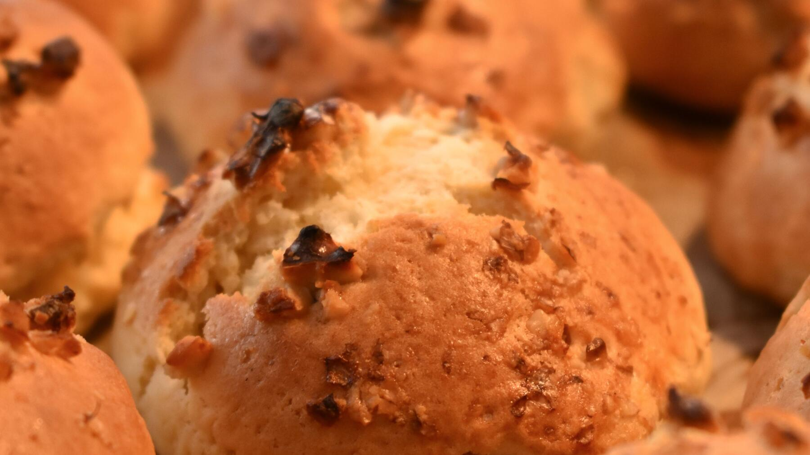

Zurück zur Übersicht
Speckbrötchen
Herzhafte Brötchen mit ausgelassenem Räucherspeck im Teig. Eine Portion entspricht einem Brötchen.
- Zeit
- 2 Std.
- Schwierigkeit
- mittel
- Kategorie
- Brot & Brötchen
- Ernährung
- mit Fleisch
Zutaten
Portionen
- 225 gGeräucherter Bauchspeck
- 150 gWeizenmehl Type 550
- 225 gWeizenmehl Type 1050
- 30 gHefe
- 1 PriseZucker
- 150 mlLauwarmes Wasser
- 100 mlLauwarme Buttermilch
- 2½ TLSalz (2–3 TL)
Zubereitung
- Den Speck in Würfel schneiden, auslassen, in einem Sieb abtropfen und auskühlen lassen.
- Die Mehle in eine Schüssel sieben, eine Mulde hineindrücken und die Hefe hineinbröckeln. Mit Zucker, etwas Wasser und etwas Mehl verrühren und diesen Vorteig etwa 15 Minuten gehen lassen.
- Restliches Wasser, Buttermilch und Salz nach und nach zugeben und kräftig kneten.
- Die Speckwürfel unterkneten und den Teig zugedeckt bis zur doppelten Größe gehen lassen.
- Durchkneten und zu kleinen Brötchen formen. Auf dem Blech kurz gehen lassen, mit Wasser bestreichen und im vorgeheizten Ofen bei 200 °C 25–30 Minuten backen.